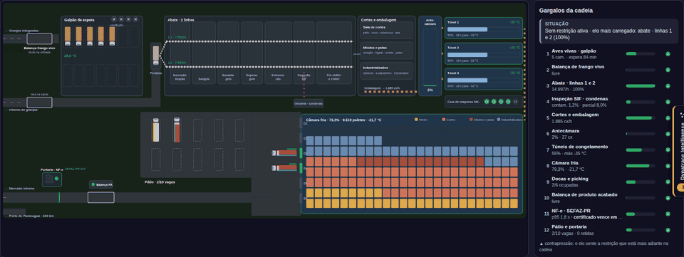
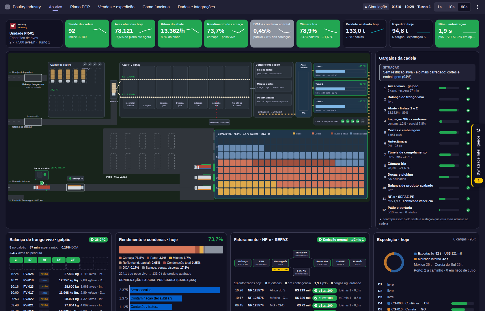
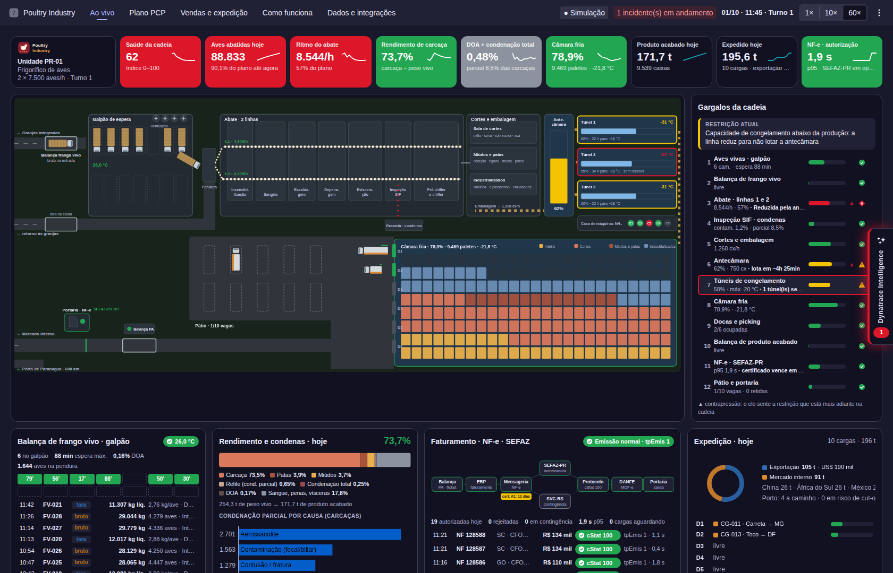
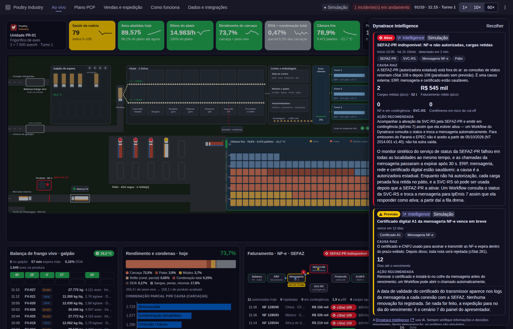
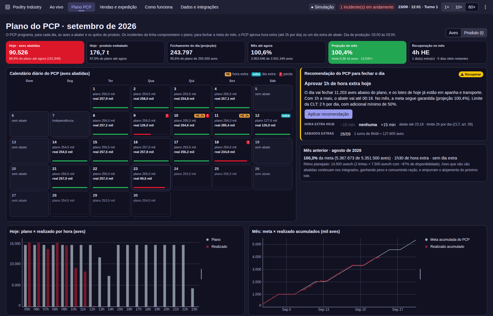
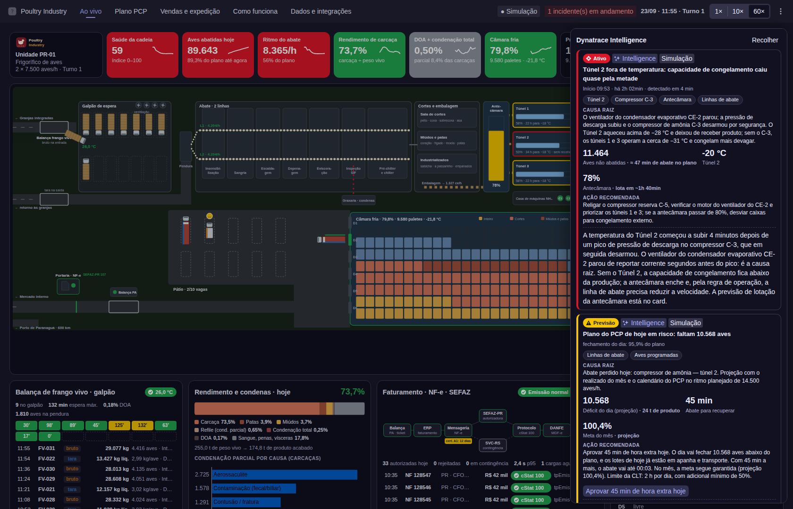
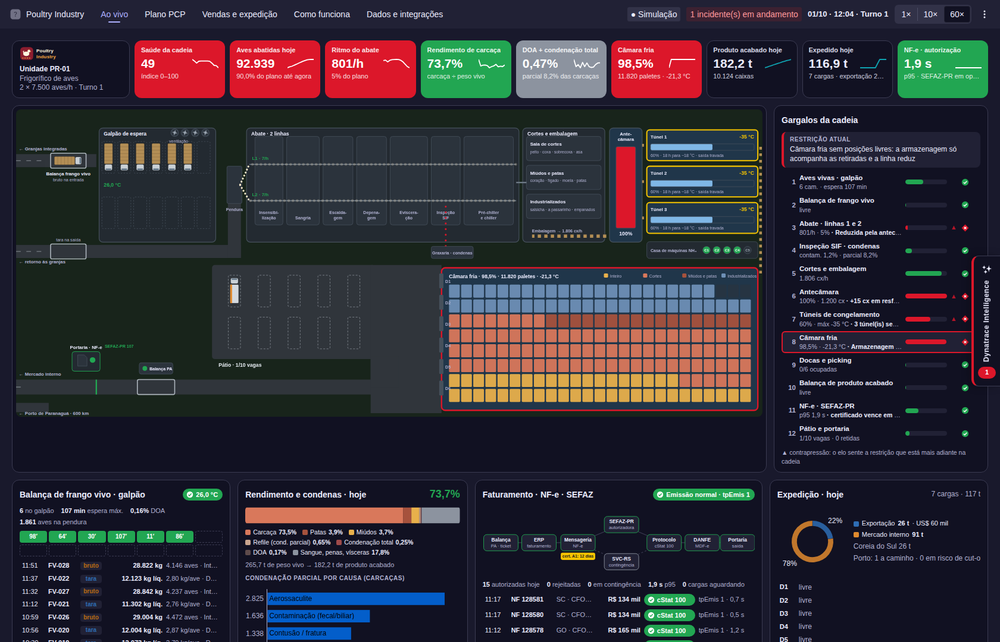
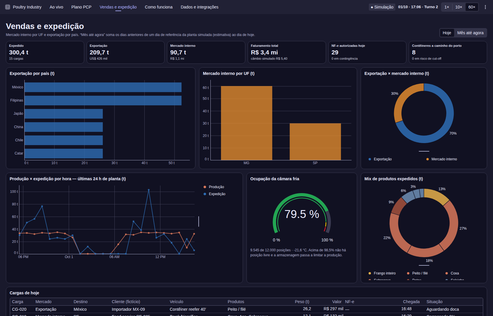
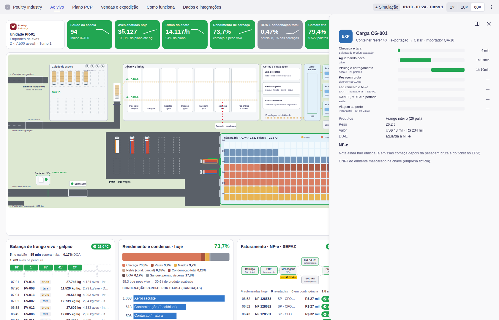

A cadeia de um frigorífico de aves em movimento dentro da Dynatrace: da balança de frango vivo ao abate, ao congelamento, à câmara fria, à NF-e autorizada pela SEFAZ e à exportação — contra o plano diário do PCP — e a Dynatrace Intelligence mostrando onde está o gargalo, como ele se propaga e quanta hora extra o plano vai pedir.

⚠️ Aviso: criado e mantido por @adrianorafael sem vínculo com a Dynatrace e sem responsabilidade por falhas, problemas ou consumo de recursos e licenças. É uma versão de estudo/demonstração, sem suporte oficial. Instalá-lo no seu ambiente é por sua conta e risco. Você também é livre para melhorar e ampliar suas funcionalidades. "Poultry Industry" é uma empresa fictícia; todos os dados são simulados.
Dados simulados de uma empresa fictícia. Clique em uma imagem para abri-la em tamanho real.








Uma história pronta para demonstração: veja a planta, veja os números e veja a Dynatrace achar o gargalo.
Caminhões de aves vivas, balança (bruto e tara), galpão de espera, duas linhas de abate, graxaria, cortes, antecâmara, três túneis, câmara fria, docas, pátio, balança de produto acabado e portaria.
Saúde (0–100), aves abatidas, ritmo do abate, rendimento de carcaça, DOA + condenação, câmara fria, produto acabado, expedido e autorização da NF-e.
Os 12 elos em ordem com utilização e estado; a restrição atual em destaque e a contrapressão (▲) nos elos que já a sentem.
Balanço de massa do peso vivo ao produto acabado e o ranking das causas de condenação parcial do SIF.
Balança → ERP → mensageria → SEFAZ-PR / SVC-RS → protocolo → DANFE/MDF-e → portaria, com uma partícula por nota, cStat, tpEmis e validade do certificado.
Calendário do mês com o plano diário de aves e de quilos, realizado, aderência até agora, projeção do dia e do mês e o custo de cada incidente em horas de abate.
Exportação por país e mercado interno por UF, mix de produtos, produção × expedição, ocupação da câmara e a tabela de cargas do dia.
Gaveta recolhível com causa raiz, entidades afetadas, impacto calculado, tempo de detecção, ação recomendada e explicação.
Sete cenários, 1× / 10× / 60×, hora simulada, semente, hora extra / sábado extra do PCP, tour automático de 6 minutos, modo TV, "Fontes Dynatrace" e resumo.
Business Events poultry.* e seus campos, métricas OT, Business Flow, Workflows e a ordem de implantação para dados reais.
Qualquer elo que trava empurra o problema para trás. Os incidentes correm no tempo da planta.
| Tecla | Cenário | O que acontece |
|---|---|---|
| 1 | Calor no galpão de espera | Banco de ventiladores V-04 parado em dia de 34 °C: temperatura e DOA sobem. |
| 2 | Contaminação na evisceração | Evisceradora L2 perde vácuo: contaminação ~7%, o SIF reduz a L2, condenas sobem, rendimento cai. |
| 3 | Compressor de amônia — Túnel 2 | C-3 desarma: T2 para de receber, antecâmara enche, a linha reduz. |
| 4 | Navio omitiu escala | Quarto dia sem retirada de contêineres: câmara a 98,5%, túneis travam, a linha reduz. |
| 5 | Balança de produto acabado sem integração | Tickets não chegam ao ERP; digitação manual após 30 min; pátio e docas lotam. |
| 6 | SEFAZ-PR indisponível | cStat 108/109; cargas retidas até a SEFAZ-PR ativar a SVC-RS (~1h15); um Workflow troca para tpEmis 7. |
| 7 | Certificado digital A1 vencido | Toda NF-e rejeitada (cStat 281) até instalar o certificado renovado — a previsão já estava na tela. |
Para emissores do Paraná, o EPEC deixa de ser aceito a partir de 05/10/2026 (NT 2014.001 v1.40): em uma queda da SEFAZ-PR, a única saída é a SVC-RS, que depende da ativação pela própria SEFAZ-PR.
Os comportamentos importantes para entender antes de rodar em um ambiente real.
Nenhum dado sai ou entra no tenant. Empresa, integrados, clientes, veículos, notas e incidentes são fictícios; países, portos e órgãos públicos são reais porque fazem parte do domínio.
1 minuto real = 1 hora de planta, no fuso de quem abre o app. À noite há higienização e as linhas param: use a hora simulada do painel do apresentador.
A linha segue uma regra de operação com antecipação de 90 min sobre o que o frio consegue absorver: a contrapressão sai do modelo.
A mesma semente, na mesma hora simulada, reproduz os mesmos caminhões e cargas — dá para ensaiar a demonstração.
Ao abrir, ao mudar a hora e depois de a aba ficar oculta, o simulador recalcula as últimas horas da planta em passos rápidos.
O dia de produção vai das 03:00 às 03:00. Só os dias úteis têm plano; a planta simulada abate todos os dias, então um sábado, domingo ou feriado aparece como abate extra. Os dias anteriores à sessão são um histórico sintético.
Fontes Dynatrace, modo TV e o ID opcional de dashboard ficam no localStorage.
A pesquisa e o planejamento — fontes, números do setor, NF-e/SEFAZ, exportação e calibração — estão em
specs/poultry-industry.md.
Um projeto padrão do Dynatrace App Toolkit — do tipo que você mesmo pode criar e estender.
my.poultry.industry
A versão 0.1.0 não executa nenhuma consulta DQL e nenhuma app function: não há consumo de Grail Query. Os fatores abaixo valem para um futuro modo com dados reais, que não é publicado.
| Fator de custo | Impacto em apps com dados | Esta versão |
|---|---|---|
| Auto-refresh / polling | Dominante — 1 consulta por intervalo, por aba aberta | Não se aplica (sem consultas) |
| Largura do intervalo de tempo | Médio — janela maior = mais dados varridos | Não se aplica |
| Usuários / abas simultâneas | Linear | Sem efeito |
| Volume de dados | Depende do ambiente | Sem efeito |
Cenários mensais
| Cenário | Consultas / mês | GB varridos | Custo estimado* |
|---|---|---|---|
| Versão 0.1.0 (simulador), qualquer uso | 0 | 0 | Nenhum |
Um futuro modo com dados reais consultaria Business Events com frequência — e o polling é o fator dominante.
Nenhuma consulta desse tipo é publicada ainda, então não há número medido: meça o scannedBytes da sua consulta e use
GB/mês ≈ GB_por_consulta × consultas_por_hora × horas_por_dia × dias × abas_simultâneas.
* Multiplique os GB varridos pela tarifa DPS "Grail Query – data analyzed" do seu contrato — o valor depende inteiramente da sua tabela de preços.
metadata.grail.scannedBytes do queryExecute.| fields … (o Grail é colunar).# configuração app.config.json # environmentUrl (marcador), id do app, versão, ícone, escopos (nenhum) specs/poultry-industry.md # pesquisa e planejamento: fontes, números, cenários, calibração ui/app/ ├── sim/ # simulador: engine, model, scenarios, testes de calibração ├── scene/ # planta animada (SVG, imperativo) ├── components/ # KPIs, gargalos, balança, rendimento, NF-e, expedição, Intelligence, detalhes ├── pages/ # Ao vivo, Plano PCP, Vendas e expedição, Como funciona, Dados e integrações ├── data/ # descrição dos elos e mapa de dados reais ├── state/ # contexto do engine, loop de animação, atalhos, tour ├── theme/colors.ts # paleta de status, marca, produtos e planta └── App.tsx # rotas ui/assets/ # logos e ícone da marca fictícia docs/ # esta página scripts/ # scan-secrets.sh, pre-commit, test-sim.mjs
Do zero ao app rodando para todos os usuários do seu tenant, em cerca de cinco minutos.
app-engine:apps:install e app-engine:apps:run
no ambiente de destino. Você também precisa de Node.js 24 e npm ≥ 9.git clone https://github.com/adrianorafael/poultry-industry-for-dynatrace.git cd poultry-industry-for-dynatrace npm install
app.config.json, troque YOUR-ENVIRONMENT em
environmentUrl pelo ID do seu tenant — copie da barra de endereços: https://YOUR-TENANT-ID.apps.dynatrace.com/.npx dt-app dev e abra o link do local-dev-server
que ele imprime (não localhost:3000 diretamente).npx dt-app deployA primeira execução abre o navegador para o login. O app não declara escopos OAuth, então não há consentimento de dados.
app.version e rode npx dt-app deploy de novo;
npx dt-app uninstall remove (precisa de app-engine:apps:delete).npm run start — servidor de desenvolvimentonpm run build — build de produçãonpm run deploy — deploy no seu ambientenpm run lint · typecheck · test:sim · scan:secrets| Sintoma | Causa e correção |
|---|---|
'app.description' must NOT have more than 80 characters | Encurte a descrição em app.config.json. |
| O deploy falha porque a versão já existe | Incremente app.version em app.config.json (e CHANGELOG, README, página). |
O app abre em localhost:3000 mas parece quebrado | Abra o link impresso pelo npx dt-app dev — o app precisa rodar dentro da Dynatrace. |
| As linhas estão paradas e quase nada se mexe | É noite no seu fuso (higienização): escolha 10:00 ou 17:00 na hora simulada do painel do apresentador. |
| Nada se mexe | A simulação está pausada (Espaço) ou a velocidade está em 1×; use 60×. |
| O Plano PCP não recomenda nada depois de um incidente | O mês já estava à frente da meta e o dia ainda fecha dentro da tolerância (15 min de abate): deixe o incidente correr mais ou dispare o 3 (túnel) por ~1 h de planta. |
| A hora extra não pode ser aprovada | O abate do dia já terminou (higienização): a hora extra só estende o turno que ainda está rodando. |
| O cenário da SEFAZ não retém nenhuma carga | Não havia carga sendo faturada naquele momento: dispare-o às 10:00 ou 17:00, quando as cargas do pico chegam à balança. |
| As animações pesam em um notebook lento | Use 10×, evite combinar cenários ou ative "reduzir movimento" no sistema. |
| Botão "Abrir dashboard" não aparece | Cole o ID de um documento de dashboard no painel do apresentador; o botão só aparece quando preenchido. |
| Aviso sobre a versão do Node.js | O dt-app suporta Node 24; versões mais novas funcionam, mas mostram um aviso. |